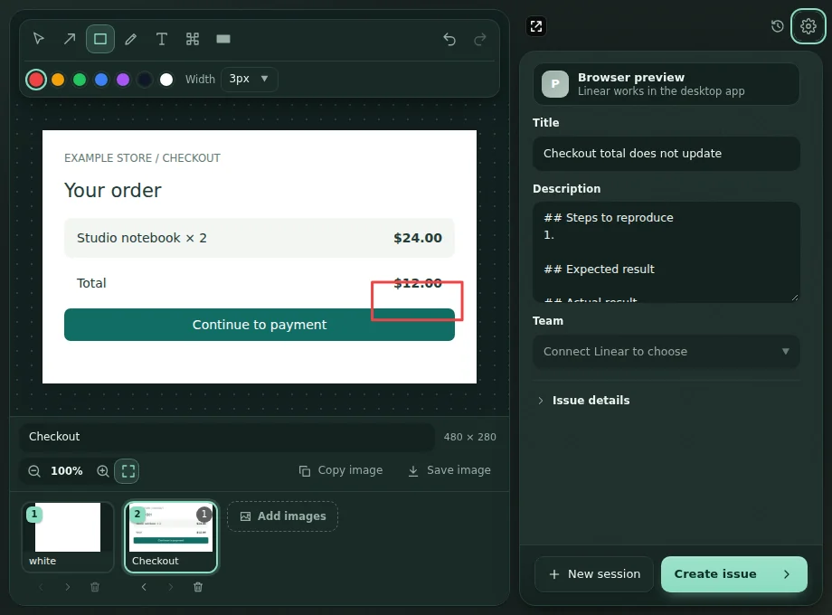
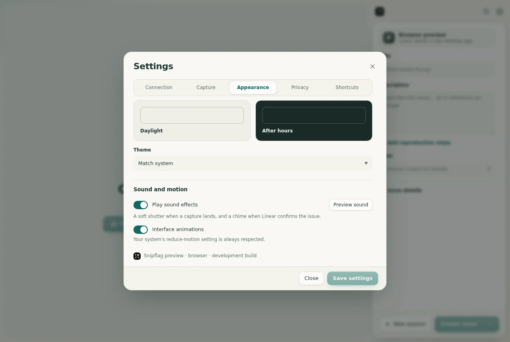

Many screenshots. One Linear issue.
Snipflag is a free desktop app. Capture your screen, mark what is wrong, and send every screenshot to Linear as one clear issue.
10screenshots per issue1Linear issue, in order0uploads until you click Create
Windows, macOS and Linux. v1.0.0 is an unsigned preview, so your OS will ask before opening it. Why?

The problem
The screenshot shuffle.
A visual bug is rarely one screenshot. Filing one in Linear usually looks like this.
Snip the screen and save it somewhere.Snip again. And again. Lose track of which is which.Open an image editor to draw one red box.Remember the customer email is visible. Start over.Drag the files into Linear and hope the order holds.Write "see the second image, top right".- With Snipflag: capture, mark, Create issue.
Every extra step is a chance to lose context. Snipflag keeps the whole report together, from the first capture to the finished issue.
How it works
How Snipflag works in five steps
- 01
Capture
Press Ctrl Shift 2. Every monitor freezes. Drag a region.
- 02
Mark it
Arrow, rectangle, pen, highlighter, text and pixelate.
- 03
Capture again
Add another screenshot. The first keeps its marks and its undo history.
- 04
Put them in order
Reorder, caption, and point to them with @image1 in the description.
- 05
Create one issue
Every screenshot uploads in order, into a single Linear issue.
Illustration with sample screenshots
Try it here
Mark it up. Right here.
A small version of the Snipflag editor, running in your browser. Nothing you draw leaves this page.
- A P H B switch tools, like in the app
- Hold Shift to snap arrows to 15°
- Pixelate averages real 14 px blocks. The app burns the same kind of blocks into every export.
Features
Small app. Complete report.
Everything you need to go from "that looks wrong" to a Linear issue your team can act on.
-
01 / Capture
From the tray, one shortcut away.
Snipflag waits in the system tray. Press Ctrl Shift 2 (Cmd Shift 2 on macOS) and drag.
- Freezes every monitor, respects display scaling. Enter grabs the whole screen, Escape cancels.
- Also import PNG, JPEG or WebP, paste from the clipboard, or drag and drop.
- The shortcut is configurable.
-
02 / Annotate
Point at the problem.
Arrow, rectangle, pen, highlighter, text and pixelate, with keyboard shortcuts for each.
- Hold Shift to snap arrows and pen lines to 15°, or draw perfect squares.
- Select, move and resize marks. Change color, width and text size.
- Each screenshot keeps its own undo history. Exports keep the original pixel size.
-
03 / Report
One issue, not ten attachments.
Title, description, team, project, assignee, labels and priority, without leaving the app.
- Up to 10 screenshots per issue, reordered and captioned.
- Type @ in the description to reference a screenshot. References survive reordering.
- Safe retries: each session has a stable issue ID, so a retry after a network failure checks Linear first and never creates a duplicate.
-
04 / Keep
Close the lid. Keep the draft.
Drafts save automatically and come back after a restart or a crash.
- History to reopen, resend or delete past sessions.
- A retention setting decides how long old drafts stay.
- Daylight and after-hours themes, sounds and motion you can switch off.

Privacy boundary
Nothing leaves until you click Create.
No Snipflag server, no screenshot cloud, no analytics. There is your computer, and there is your Linear workspace.
Your computer
Everything stays here while you work
- Captures, annotations and drafts
- History, with a retention setting
- Your Linear token, kept in the OS credential store
- No account needed to capture or annotate
Your Linear workspace
Only what you submit
- The final, flattened screenshots
- Pixelated areas burned into the pixels, not an overlay
- The title, description and fields you chose
- Before that, only sign-in and loading your teams and fields
Compare
How it stacks up.
Honest answers, including where other tools are the better pick. Checked against each vendor's own site on 26 September 2026.
| Feature | Snipflag | Screenpresso | Jam | BugShot | ShareX · Greenshot · Flameshot |
|---|---|---|---|---|---|
| Where it runs | Desktop: Windows, macOS, Linux | Desktop: Windows 11 | Chrome extension, Mac app | Chrome side panel | Desktop |
| Creates Linear issues | Yes, OAuth | Yes | Yes | Yes, OAuth | No |
| Captures any desktop app | Yes | Yes | Mac app only | Browser tabs only | Yes |
| Open source | MIT | No | No | MIT | GPL-3.0 |
| Price | Free | Free, paid Pro | Free tier, Team $14/creator/mo | Free | Free |
Windows capture suite with a Linear publisher.
Read comparison → vsJamBrowser recordings with console and network logs.
Read comparison → vsBugShotOpen-source Chrome side panel for web bugs.
Read comparison → vsShareX, Greenshot, FlameshotGreat free screenshot tools, no Linear.
Read comparison →FAQ
Fair questions.
Is Snipflag free?
Yes. Snipflag is free and open source under the MIT License. There is no account, subscription or screenshot cloud.
Can I send several screenshots to one Linear issue?
Yes. A session holds up to 10 screenshots. Each keeps its own annotations and undo history, and they upload in your chosen order into a single Linear issue.
How does Snipflag connect to Linear?
With Linear OAuth and PKCE. In v1.0.0 you create an OAuth application in Linear (Settings → API → OAuth applications), add the callback http://127.0.0.1:47839/callback and paste its client ID into Snipflag. The token is stored in your operating system's credential store. Setup guide.
Why does Windows or macOS warn when I open the installer?
v1.0.0 is an unsigned preview. Installers are built on GitHub Actions and published with SHA-256 checksums, but they are not code-signed yet, so Windows SmartScreen and macOS Gatekeeper ask before opening them. On macOS, allow Screen Recording when asked.
Does Snipflag record video or capture console logs?
Does it work with Jira or GitHub Issues?
No. Snipflag creates Linear issues only. You can still copy or save any annotated screenshot as a PNG.
Where are my screenshots stored?
On your computer, in the app data folder, until you click Create issue. Only the final flattened images are uploaded to Linear. Drafts can be deleted from History or Settings.
Does capture work on Linux Wayland?
Some Wayland compositors block direct screen capture. Importing, pasting and dragging in images still works everywhere.